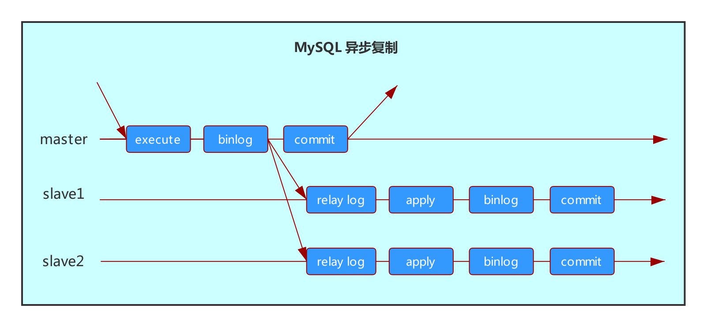
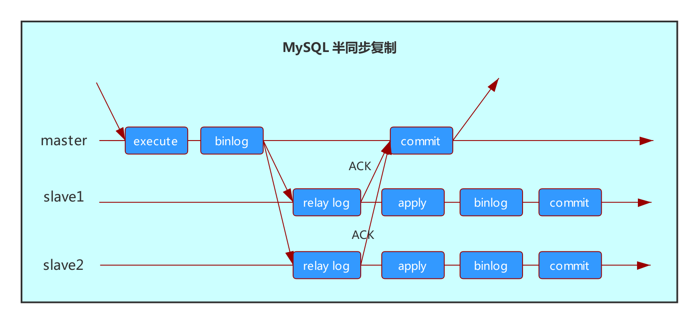

前言
对于高访问量的业务场景，MySQL 读写分离显得格外重要。
通常我们说的 MySQL 读写分离是指：对于修改操作在主库上执行，而对于查询操作，在从库上执行。主要目的是分担主库的压力。
但是读写分离有时也会存在问题，比如：主从延迟时，读取的从库数据不是最新的，对应的业务场景比如：
你网购的一个商品，付完款之后，因为主从延迟，第一时间还查询不到订单（查询的从库），即使等一段时间能看到订单，但是相信这种情况很多用户是不能接受的。
接下里就一起来讨论一下：读写分离需要注意哪些问题。
通常情况下，读写分离都是依赖主从复制，因此，我们先来看看主从复制的原理，也能方便我们理解为什么会出现主从延迟的现象。
主从复制的原理
MySQL 异步复制
传统的 MySQL 主从复制是异步的，因此也称为异步复制，MySQL 异步复制的原理如下：
- 在主库开启 binlog 的情况下
- 如果主库有增删改的语句，会记录到 binlog 中
- 主库通过 IO 线程把 binlog 里面的内容传给从库的中继日志（relay log）中
- 主库给客户端返回 commit 成功（这里不会管从库是否已经收到了事务的 binlog）
- 从库的 SQL 线程负责读取它的 relay log 里的信息并应用到从库数据库中
实现原理如下图：

在上图中，有一个地方不能忽视：
在主库上并行运行的更新 SQL，由于从库只有单个 SQL 线程去消化 relay log，因此更新的 SQL 在从库只能串行执行。这也是很多情况下，会出现主从延迟的原因。
当然，从 5.6 开始，MySQL 支持了每个库可以配置单独的 SQL 线程来消化 relay log，在 5.7 又增加了基于组提交的并行复制，大大改善了主从延迟的问题。
MySQL 半同步复制
在 MySQL 异步复制的基础上，又出现了一种改进的复制方式，称为：半同步复制。其原理如下：
- 在主库开启 binlog 的情况下
- 如果主库有增删改的语句，会记录到 binlog 中
- 主库通过 IO 线程把 binlog 里面的内容传给从库的中继日志（relay log）中
- 从库收到 binlog 后，发送给主库一个 ACK，表示收到了
- 主库收到这个 ACK 以后，才能给客户端返回 commit 成功
- 从库的 SQL 线程负责读取它的 relay log 里的信息并应用到从库数据库中
实现原理如下图：
跟传统的异步复制相比，半同步复制保证了所有给客户端发送过确认提交的事务，从库都已经收到这个日志了。
常见的读写分离方式
通过程序
开发通过配置程序来决定修改操作走主库，查询操作走从库。这种方式直连数据库，优点是性能会好点，缺点是配置麻烦。
但是需要注意的是：从库需要设置为 read_only，防止配置错误在从库写入了数据。
这里提醒一点：
程序连接的用户建议不要给 super 权限，因为 super 权限的用户，即使整个库设置了 read_only ，也能写入数据。
2.2、通过中间件
通过中间件实现读写分离，目前算是一种主流的方式。拿 MyCAT 举例：
在 schema.xml 文件中，dataHost 标签 balance 属性的值，决定了是否启用读写分离。
balance 各个值及对应的读写方法如下：
- 0：不开启读写分离，读操作发送到 writehost
- 1：全部的 readhost 与 stand by writehost 参与 select 语句的负载均衡
- 2：所有读操作都随机在 writehost、readhost上分发
- 3：所有读请求随机分发到 writerhost 对应的 readhost 执行，writehost 不负担读压力
因此可以根据实际情况选择上面合适的读写分离策略。
什么情况下会出现主从延迟
我们说到，对于读写分离场景，最大的问题就是：主从延迟。那么在哪些情况下会出现主从延迟呢？这里大致总结一下可能导致主从延迟的场景：
- 大表 DDL
- 大事务
- 主库 DML 并发大
- 从库配置差
- 表上无主键
- 等等
因此，如果存在读写分离的情况，应尽量避免上诉情况在业务高峰出现。
当然，我们不能完全杜绝主从延迟。因此再介绍几种读写分离场景下应对延迟的方法。
读写分离怎样应对主从延迟
读写分离场景应该怎样应对主从延迟呢？这里来讨论一下几种常见的应对主从延迟的方法：
判断主从是否延迟
有些业务场景，如果所有请求都落在主库，主库压力会很大，但是在读写分离的情况，又不希望主从存在延迟的时候去读取从库。这种情况，就可以考虑查询时，先判断主从是否存在延迟，如果存在延迟，则查询落在主库，如果没延迟，则查询语句落在从库。
这里介绍几种判断主从延迟的方法：
第一种方法：判断 Seconds_Behind_Master 是否等于 0。
如果 Seconds_Behind_Master =0，则查询从库，如果大于 0，则查询主库。
这里补充一下 Seconds_Behind_Master。
Seconds_Behind_Master 是在从库上执行 show slave status 时返回的其中一项，表示从库延迟的秒数。
其计算方法是：
从库服务器当前的时间戳与二进制日志中的事件的时间戳（在主库上的写入时间）相对比得到的。
但是某些情况下，Seconds_Behind_Master 并不一定准确。比如网络中断时，Seconds_Behind_Master = 0 ，并不能代表主从无延迟。因此，有比这个更准确的一种方法：对比位点或 GTID。
第二种方法：对比位点或 GTID
如果 Master_Log_File 跟 Relay_Master_Log_File 相等，
并且 Read_Master_Log_Pos 跟 Exec_Master_Log_Pos 相等，
则可以把读请求放到从库，否则读请求放到主库。
补充一下上面几个参数的意义：
几个参数均是通过 show slave status 返回的参数，用来查询主从复制的状态。
Master_Log_File：IO 线程正在读取的主库 binlog 文件名
Relay_Master_Log_File：SQL 线程最近执行的事务对应的主库 binlog 文件名
Read_Master_Log_Pos ：IO 线程正在读取的主库 binlog 文件中的位点
Exec_Master_Log_Pos ：SQL 线程最近读取和执行的事务对应的主库 binlog 文件中的位点
如果开启了 GTID 复制，则可以对比 Retrieved_Gtid_Set 和 Executed_Gtid_Set 是否相等，相等则把读请求放到从库，有差异则读请求放到主库。
同样补充下两个参数的意义：
前提是需要开启 GTID 两个参数才会有值，解释如下：
Retrieved_Gtid_Set：从库收到的所有日志的 GTID 集合
Executed_Gtid_Set：从库已经执行完的 GTID 集合
采用半同步复制
在本节的前面，我们讲解了半同步复制的原理，跟传统的异步复制相比，半同步复制保证了所有给客户端发送过确认提交的事务，从库都已经收到这个日志了。因此出现延迟的概率会小很多，当然实际生产应用时，建议结合上面讲的位点或 GTID 判断。
等待同步完成
依然采用 4.1 中介绍的几种判断是否有延迟的方法，只是应对方式不一样，比如存在延迟，则将情况反馈给程序，在前端页面提醒用户数据未完全同步，如果没有延迟，则查询从库。
有人可能会觉得：这种方式谁会用啊？实际可以应用在内部人员看的报表业务上。因为报表可能涉及的 SQL 都比较复杂，存在延迟就考虑去查询主库，可能会对其它线上业务有影响，因此可以等待从库同步完成，再查询从库。
总结
本节讲了读写分离，由于能分担主库的压力，很多情况会考虑读写分离。但是在使用时，就应该考虑到一些问题，其中最主要的就是主从延迟。
这个就看业务是否能接受延迟了。
如果不能接受延迟，建议采用半同步复制并且加上延迟判断。存在延迟则把读请求放到主库，没延迟就读从库。
如果业务能接受延迟，可以等数据同步完成，再去从库进行查询。
参考资料
《MyCAT 权威指南》第 1 版：6.6.4 balance 属性
《MySQL 5.7 官方手册》 14.7.5.34 SHOW SLAVE STATUS Syntax

...
...
This is copyright.